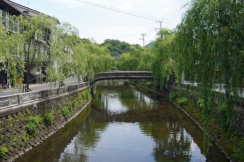

浮雲（二葉亭四迷）
五重塔（幸田露伴）
舞姫（森鴎外）
羅生門（芥川龍之介）
友情（武者小路実篤）
伊豆の踊子（川端康成）
夜明け前（島崎藤村）
たけくらべ（樋口一葉）
金色夜叉（尾崎紅葉）
吾輩は猫である（夏目漱石）
草枕（夏目漱石）
雁（森鴎外）
蟹工船（小林多喜二）
風立ちぬ（堀辰雄）
細雪（谷崎潤一郎）
斜陽（太宰治）

城の崎にて（志賀直哉）
蒲団（田山花袋）
金閣寺（三島由紀夫）
沈黙（遠藤周作）
蛍川（宮本輝）

Ken, A. & Yukio, M., (2000), Gensyoku shinnihonbungakusi, [Original color new history of Japanese literature], (p.266-267), Buneidou.
Ukigumo
It is three o’clock in the afternoon of a late October day.
A swirling mass of men stream out of the Kanda gate, marching first in antlike formation, then scuttling busily off in every direction.
Each and everyone of these fine gentlemen is primarily interested in getting enough to eat.
Translated by Marleigh Grayer Ryan.
A swirling mass of men stream out of the Kanda gate, marching first in antlike formation, then scuttling busily off in every direction.
Each and everyone of these fine gentlemen is primarily interested in getting enough to eat.
Translated by Marleigh Grayer Ryan.
The Five-Storied Pagoda
Facing a sturdy rectangular brazier of elegantly grained zelkova wood edged with red oak sat a woman about thirty years of age who looked rather lonesome in the absence of anyone to keep her company.
Her handsome, almost staunch eyebrows were shaved off, an indication that she was married, leaving an appealing suggestion of bluish green, like the brilliant color of mountains after rain.
Translated by Chieko Irie Mulhern.
Her handsome, almost staunch eyebrows were shaved off, an indication that she was married, leaving an appealing suggestion of bluish green, like the brilliant color of mountains after rain.
Translated by Chieko Irie Mulhern.
The Dancing Girl
They have finished loading the coal, and the tables here in the second-class saloon stand in silence.
Even the bright glare from the electric lights seems wasted, for tonight the group of card players who usually gather here of an evening are staying in a hotel, and I am left alone on board.
Translated by Richard Bowring.
Even the bright glare from the electric lights seems wasted, for tonight the group of card players who usually gather here of an evening are staying in a hotel, and I am left alone on board.
Translated by Richard Bowring.
Brandenburg Gate (Germany)
Rashōmon
Evening, and a lowly servant sat beneath the Rashōmon, waiting for the rain to end.
Under the broad gate there was no one else, just a single cricket clinging to a huge red pillar from which the lacquer was peeling here and there.
Situated on a thoroughfare as important as Suzaku Avenue, the Rashōmon could have been sheltering at least a few others from the rain—perhaps a woman in a lacquered reed hat, or a courtier with a soft black cap.
Yet there was no one besides the man.
Translated by Jay Rubin.
Under the broad gate there was no one else, just a single cricket clinging to a huge red pillar from which the lacquer was peeling here and there.
Situated on a thoroughfare as important as Suzaku Avenue, the Rashōmon could have been sheltering at least a few others from the rain—perhaps a woman in a lacquered reed hat, or a courtier with a soft black cap.
Yet there was no one besides the man.
Translated by Jay Rubin.
Friendship
Nojima first met Sugiko in the front hall of the second floor of the Imperial Theater.
Privately Nojima professed to be a playwright, but he rarely went to see a play.
He would not have gone on that day, had he not been invited by a friend.
Translated by Jennifer Cullen.
Privately Nojima professed to be a playwright, but he rarely went to see a play.
He would not have gone on that day, had he not been invited by a friend.
Translated by Jennifer Cullen.
The Dancing Girl of Izu
About the time the road began to wind and I realized that I was finally near Amagi Pass, a curtain of rain swept up after me at a terrific speed from the foot of the mountain, painting the dense cedar forests white.
Translated by J. Martin Holman.
Translated by J. Martin Holman.
Before the Dawn
The Kiso road lies entirely in the mountains.
In some places it cuts across the face of a precipice.
In others it follows the banks of the Kiso river, far above the stream.
Elsewhere it winds around a ridge and into another valley.
All of it runs through dense forest.
Translated by William E. Naff.
In some places it cuts across the face of a precipice.
In others it follows the banks of the Kiso river, far above the stream.
Elsewhere it winds around a ridge and into another valley.
All of it runs through dense forest.
Translated by William E. Naff.
Growing Up
It is a long way around to the main gate of the Yoshiwara, the licensed quarter, to the willows with their trailing branches; but the Yoshiwara moat, dark like the smiles of the black-toothed beauties, reflects the lights and the sport in the three-storied houses near enough to touch.
Day and night the rickshaws come and go—who can guess what riches they tell of?
The section is named for the Daionji Temple, but for all that its name reeks of Buddhism, it is a lively enough spot, people who live there say.
Translator unknown.
Day and night the rickshaws come and go—who can guess what riches they tell of?
The section is named for the Daionji Temple, but for all that its name reeks of Buddhism, it is a lively enough spot, people who live there say.
Translator unknown.
The Golden Demon
Every gate way was decorated with its New Year’s pines, and every one was shut, though it was yet early in the night.
The long broad street, running from East to West, looked as if it had been swept perfectly clean: there was not even a shadow on it.
Rewritten in English by A. and M. Lloyd.
The long broad street, running from East to West, looked as if it had been swept perfectly clean: there was not even a shadow on it.
Rewritten in English by A. and M. Lloyd.
I am a cat
I am a cat.
As yet I have no name. I’ve no idea where I was born.
All I remember is that I was miaowing in a dampish dark place when, for the first time, I saw a human being.
Translated by Aiko Ito and Graeme Wilson.
As yet I have no name. I’ve no idea where I was born.
All I remember is that I was miaowing in a dampish dark place when, for the first time, I saw a human being.
Translated by Aiko Ito and Graeme Wilson.
Kusamakura
As I climb the mountain path, I wonder—
If you work by reason, you grow rough-edged; if you choose to dip your oar into sentiment’s stream, it will sweep you away.
Demanding your own way only serves to constrain you.
However you look at it, the human world is not an easy place to live.
Translated by Meredith McKinney.
If you work by reason, you grow rough-edged; if you choose to dip your oar into sentiment’s stream, it will sweep you away.
Demanding your own way only serves to constrain you.
However you look at it, the human world is not an easy place to live.
Translated by Meredith McKinney.
The Wild Geese
This story happened long ago, but by chance I remember that it occurred in 1880, the thirteenth year of Emperor Meiji's reign.
That date comes back to me so precisely because at the time I lodged in the Kamijo, a boarding house which was just opposite the Iron Gate of Tokyo University, and because my room was right next to that of the hero of the story.
Translated by Kingo Ochiai and Sanford Goldstein.
That date comes back to me so precisely because at the time I lodged in the Kamijo, a boarding house which was just opposite the Iron Gate of Tokyo University, and because my room was right next to that of the hero of the story.
Translated by Kingo Ochiai and Sanford Goldstein.
The Crab Cannery Ship
“Buddy, we’re off to hell!”
Leaning over the deck railing, two fishermen looked out on the town of Hakodate stretched like a snail embracing the sea.
Translated by Željko Cipriš.
Leaning over the deck railing, two fishermen looked out on the town of Hakodate stretched like a snail embracing the sea.
Translated by Željko Cipriš.
The Wind Has Risen
Day after summer day I lay in the lush meadow of pampas grass under the shade of a white birch while you stood nearby, absorbed in your painting.
Translated by Francis B. Tenny.
Translated by Francis B. Tenny.
The Marioka Sisters
“Would you do this please, Koi-san?”
Seeing in the mirror that Taeko had come up behind her, Sachiko stopped powdering her back and held out the puff to her sister.
Her eyes were still on the mirror, appraising the face as if it belonged to someone else.
The long under-kimono, pulled high at the throat, stood out stiffly behind to reveal her back and shoulders.
“And where is Yukiko?”
Translated by Edward G. Seidensticker.
Seeing in the mirror that Taeko had come up behind her, Sachiko stopped powdering her back and held out the puff to her sister.
Her eyes were still on the mirror, appraising the face as if it belonged to someone else.
The long under-kimono, pulled high at the throat, stood out stiffly behind to reveal her back and shoulders.
“And where is Yukiko?”
Translated by Edward G. Seidensticker.
The Setting Sun
Mother uttered a faint cry.
She was eating soup in the dining-room.
I thought perhaps something disagreeable had got into the soup. "A hair?" I asked.
Translated by Donald Keene.
She was eating soup in the dining-room.
I thought perhaps something disagreeable had got into the soup. "A hair?" I asked.
Translated by Donald Keene.
Kinosaki Onsen
At Kinosaki
I was struck and thrown to the ground by a trolley car of the Yamanote line.
To recuperate from my injury, I went by myself to a hot springs inn at Kinosaki in Tajima.
If the injury to my back should develope into spinal tuberculosis, it might prove fatal.
But I was told by the doctor that that kind of thing was not at all likely.
Translated by Lane Dunlop.
To recuperate from my injury, I went by myself to a hot springs inn at Kinosaki in Tajima.
If the injury to my back should develope into spinal tuberculosis, it might prove fatal.
But I was told by the doctor that that kind of thing was not at all likely.
Translated by Lane Dunlop.
The Quilt
As he started down the gentle slope of that road in Koishikawa that leads from Kirishitanzaka to Gokurakusui, he thought things over.
“Well, this is the end of the first stage of my relationship with her.
It’s ridiculous to think I could ever have considered such a thing, what with me being thirty-six and with three children as well.
And yet . . . I wonder—can it really be true? All that affection she showed me—was it really just affection, and not love?”
Translated by Kenneth G. Henshall.
“Well, this is the end of the first stage of my relationship with her.
It’s ridiculous to think I could ever have considered such a thing, what with me being thirty-six and with three children as well.
And yet . . . I wonder—can it really be true? All that affection she showed me—was it really just affection, and not love?”
Translated by Kenneth G. Henshall.
The Temple of the Golden Pavilion
Ever since my childhood, Father had often spoken to me about the Golden Temple.
My birthplace was a lonely cape that projects into the Sea of Japan northeast of Maizuru.
Translated by Ivan Morris.
My birthplace was a lonely cape that projects into the Sea of Japan northeast of Maizuru.
Translated by Ivan Morris.
Silence
News reached the Church in Rome.
Christovao Ferreira, sent to Japan by the Society of Jesus in Portugal, after undergoing the torture of ‘the pit’ at Nagasaki had apostatized.
Translated by William Johnston.
Christovao Ferreira, sent to Japan by the Society of Jesus in Portugal, after undergoing the torture of ‘the pit’ at Nagasaki had apostatized.
Translated by William Johnston.
Fireflies River
Old Ginzō pulled his cart over Yukimi Bridge and disappeared down the street toward Hachinin machi.
The snow had stopped falling early that morning, leaving a mantle of sparkling white over the entire town—but now the streets of Toyama were coated with a somber, silvery sheen.
Translated by Roger K. Thomas and Ralph McCarthy.
The snow had stopped falling early that morning, leaving a mantle of sparkling white over the entire town—but now the streets of Toyama were coated with a somber, silvery sheen.
Translated by Roger K. Thomas and Ralph McCarthy.
Tateyama